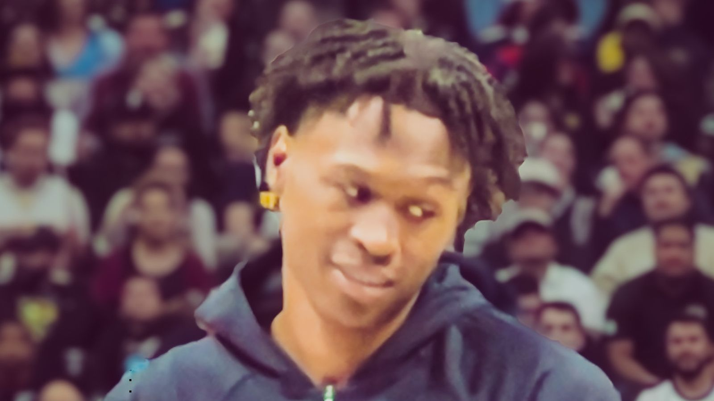

ワトソン、キャバリアーズへ —— ナゲッツとの5チーム間サイン&トレードで合意へ
デンバー・ナゲッツが、制限付きフリーエージェントのペイトン・ワトソンをクリーブランド・キャバリアーズへ送るサイン&トレードの合意に近づいていると、Chris Haynes（NBA on Prime）が日本時間8月20日、自身のXで一報を伝えた。

5チーム間の取引、4年8800万ドルで合意へ
「This will be a 5-team deal that will see Peyton Watson agree to terms on a 4-year, $88M deal with a player option, sources say.」——Haynesによれば、この移籍は5チームが関与する取引となり、ワトソンは4年・総額8800万ドル、プレーヤーオプション付きの契約条件に合意する見通しだという。
サイン&トレードという形
「BREAKING: The Denver Nuggets are near a deal that will send restricted free agent Peyton Watson to the Cleveland Cavaliers in a sign-and-trade, league sources tell me.」——ワトソンは制限付きフリーエージェントの立場にあり、ナゲッツが直接契約するのではなく、サイン&トレードの形でキャバリアーズへ送り出す方向だとHaynesは伝えている。契約の細かい条件や関係する残り3チーム、対価の詳細は、この時点では明らかになっていない。
出典: Chris Haynes（NBA on Prime）のXポスト（2026年8月20日・日本時間）
https://x.com/ChrisBHaynes/status/2090226657672253762